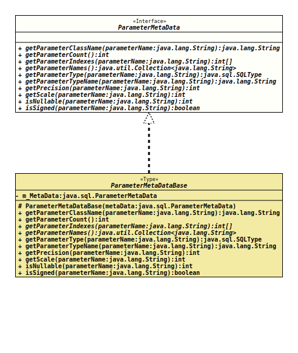

- All Known Implementing Classes:
EnhancedPreparedStatementBase.ParameterMetaDataImpl,ParameterMetaDataBase
An instance of an implementation of this interface can be used
to get information about the types and properties for each named parameter
in an
EnhancedPreparedStatement
instance. For some queries and driver implementations, the data that would
be returned by a
ParameterMetaData
object may not be available until the EnhancedPreparedStatement has
been executed.
Each named parameter for an EnhancedPreparedStatement can be
applied to the underlying
PreparedStatement
multiple times, for multiple parameter markers. The assumption is that the
features are the same for all occurrences. Only for the nullability, all
occurrences
will be checked.
- Author:
- Thomas Thrien (thomas.thrien@tquadrat.org)
- Version:
- $Id: ParameterMetaData.java 1022 2022-03-03 23:03:40Z tquadrat $
- Since:
- 0.1.0
- See Also:
- UML Diagram
-

UML Diagram for "org.tquadrat.foundation.sql.ParameterMetaData"
{kind=link}
-
Method Summary
Modifier and TypeMethodDescriptiongetParameterClassName(String parameterName) Retrieves the fully-qualified name of the Java class whose instances should be passed to the methodEnhancedPreparedStatement.setObject(String, Object).intRetrieves the number of parameters in theEnhancedPreparedStatementobject for which thisParameterMetaDataobject contains information.int[]getParameterIndexes(String parameterName) Retrieves the parameter indexes for the given parameter name.Retrieves the names of the parameters in theEnhancedPreparedStatementobject for which thisParameterMetaDataobject contains information.getParameterType(String parameterName) Retrieves the designated parameter's SQL type.getParameterTypeName(String parameterName) Retrieves the designated parameter's database-specific type name.intgetPrecision(String parameterName) Retrieves the designated parameter's specified column size.intRetrieves the designated parameter's number of digits to right of the decimal point.intisNullable(String parameterName) Retrieves whetherNULLvalues are allowed in the designated parameter.booleanRetrieves whether values for the designated parameter can be signed numbers.
-
Method Details
-
getParameterClassName
Retrieves the fully-qualified name of the Java class whose instances should be passed to the methodEnhancedPreparedStatement.setObject(String, Object).- Parameters:
parameterName- The name of the parameter, prefixed by a colon.- Returns:
- The fully-qualified name of the class in the Java programming
language that would be used by the method
EnhancedPreparedStatement.setObject()to set the value in the specified parameter. This is the class name used for custom mapping. - Throws:
SQLException- A database access error occurred.
-
getParameterCount
Retrieves the number of parameters in theEnhancedPreparedStatementobject for which thisParameterMetaDataobject contains information.- Returns:
- The number of parameters.
- Throws:
SQLException- A database access error occurred.
-
getParameterIndexes
Retrieves the parameter indexes for the given parameter name.- Parameters:
parameterName- The name of the parameter, prefixed by a colon.- Returns:
- The parameter indexes for this parameter name.
- Throws:
SQLException- The given parameter name is not defined.
-
getParameterNames
Retrieves the names of the parameters in theEnhancedPreparedStatementobject for which thisParameterMetaDataobject contains information.- Returns:
- The names of the parameters.
-
getParameterType
Retrieves the designated parameter's SQL type.
Different from
ParameterMetaData.getParameterType(int)will this method return an instance ofSQLTypefor the type, and not an integer.If the numerical value (as defined in
Types) is required, it can be obtained like this:… int sqlType = getParameterType( param ).getVendorTypeNumber().intValue(); …- Parameters:
parameterName- The name of the parameter, prefixed by a colon.- Returns:
- The SQL type.
- Throws:
SQLException- A database access error occurred.- See Also:
-
getParameterTypeName
Retrieves the designated parameter's database-specific type name.- Parameters:
parameterName- The name of the parameter, prefixed by a colon.- Returns:
- The name of the type used by the database. If the parameter type is a user-defined type, then a fully-qualified type name is returned.
- Throws:
SQLException- A database access error occurred.
-
getPrecision
Retrieves the designated parameter's specified column size.
The returned value represents the maximum column size for the given parameter. For numeric data, this is the maximum precision. For character data, this is the length in characters. For datetime datatypes, this is the length in characters of the String representation (assuming the maximum allowed precision of the fractional seconds component). For binary data, this is the length in bytes. For the ROWID datatype, this is the length in bytes. 0 is returned for data types where the column size is not applicable.
- Parameters:
parameterName- The name of the parameter, prefixed by a colon.- Returns:
- The precision.
- Throws:
SQLException- A database access error occurred.
-
getScale
Retrieves the designated parameter's number of digits to right of the decimal point.
0 is returned for data types where the scale is not applicable.
- Parameters:
parameterName- The name of the parameter, prefixed by a colon.- Returns:
- The scale.
- Throws:
SQLException- A database access error occurred.
-
isNullable
Retrieves whether
NULLvalues are allowed in the designated parameter.If the parameter with the the given name is used multiple times in the underlying
PreparedStatement, this method returns 2 when the nullability status is not the same for all uses.- Parameters:
parameterName- The name of the parameter, prefixed by a colon.- Returns:
- The nullability status of the given parameter; one of
ParameterMetaData.parameterNoNulls,ParameterMetaData.parameterNullable, orParameterMetaData.parameterNullableUnknown. - Throws:
SQLException- A database access error occurs
-
isSigned
Retrieves whether values for the designated parameter can be signed numbers.- Parameters:
parameterName- The name of the parameter, prefixed by a colon.- Returns:
trueif a value can be a signed number,falseotherwise.- Throws:
SQLException- A database access error occurred.
-